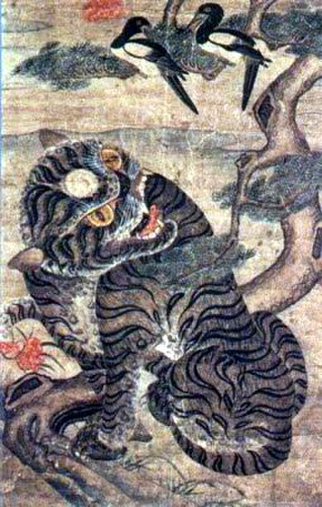
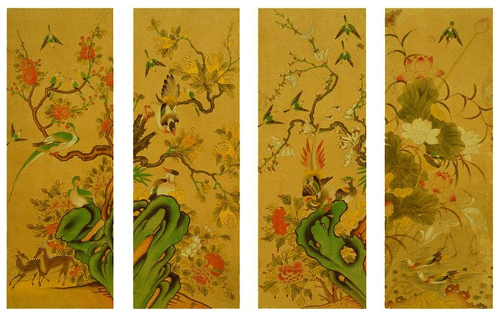
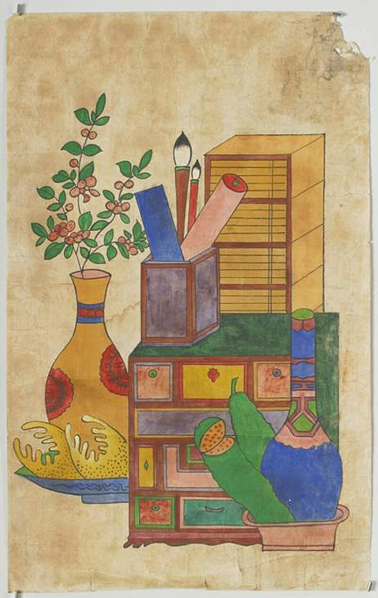
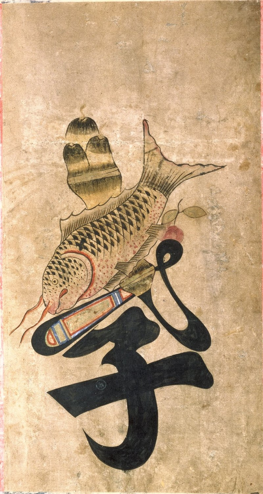
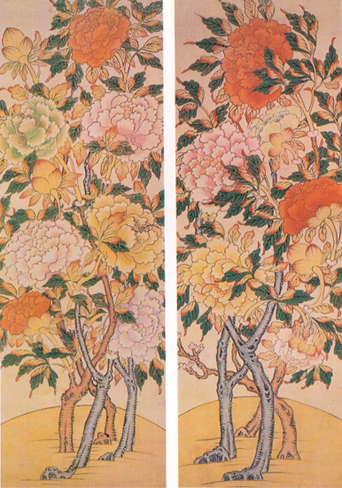
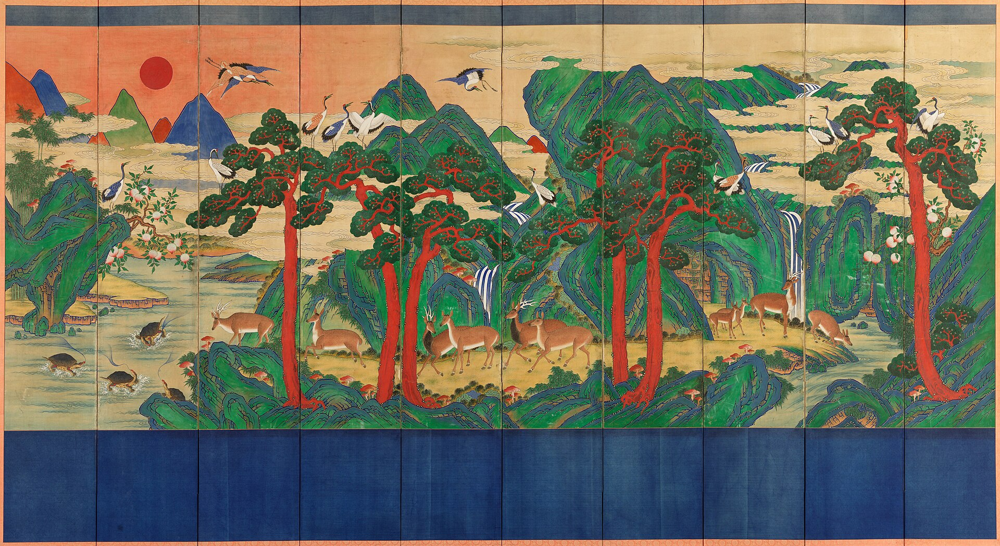

課 01
입문 과정
민화를 처음 접하는 분을 위한 기초 과정. 한지·안료·붓 다루기부터 시작해 기본 도안 모사까지, 12주 동안 천천히 민화의 기본을 익힙니다.
지은순 민화작가가 운영하는 지은순 민화연구소에서는 우리의 아름다운 전통 문화와 옛 기억을 민화(民畵) 작품을 통해 잇는 노력을 지역 사회와 함께 하고 있습니다.
지은순 민화연구소의 주도적인 노력을 통해 제천시 교동은 평범한 하나의 동네에서 100여점에 이르는 민화 벽화로 가득한 특별하고도 정겨운 동네로 탈바꿈하게 되었고, 지역 사회 및 전국의 방문객들로부터 좋은 호응을 얻고 있습니다.
지은순 민화연구소는 또한 활발한 작품, 전시, 연구 및 교육 활동을 통해 민화 문화의 계승 발전을 위해 오늘도 노력하고 있습니다.
Director · 소장
지은순 민화연구소 소장 · 민화 작가
전통 민화의 원형을 연구하고 그 정신을 오늘의 언어로 옮기는 작업을 이어 오고 있습니다. 작가로서의 창작 활동과 더불어 제천 지역을 중심으로 한 공공미술·교육 프로젝트를 꾸준히 이끌어 왔으며, 민화가 특정한 세대와 공간에만 머무르지 않고 생활 속 문화로 뿌리내리도록 하는 일에 힘을 쏟고 있습니다.
“민화는 완벽함이 아니라 바람을 그린 그림입니다.
누구나 자신의 바람을 담을 수 있는 자리,
그 자리를 여는 것이 저의 오랜 숙제입니다.”
입문부터 심화, 체험까지. 민화를 처음 만나는 이부터 오랫동안 함께해 온 분까지 모두를 위한 네 갈래의 길입니다.
민화를 처음 접하는 분을 위한 기초 과정. 한지·안료·붓 다루기부터 시작해 기본 도안 모사까지, 12주 동안 천천히 민화의 기본을 익힙니다.
조선시대 주요 민화를 직접 임모(臨摹)하며 전통 화법과 안료 사용을 깊이 있게 연구합니다. 개인 작업 지도와 비평이 함께 이루어집니다.
전통의 도상과 상징을 오늘의 감각으로 재해석하는 창작 연구반. 개인 주제를 발전시켜 전시·출간으로 이어지는 작업을 함께 합니다.
제천을 찾은 방문객과 가족을 위한 단기 체험 프로그램. 작은 부채·엽서·복주머니 같은 일상의 물건에 민화를 담아 가져갈 수 있습니다.
조선의 민중이 오랜 시간 그려 온 여섯 가지 대표 장르를 소개합니다.
각 장르에는 당시 사람들의 바람과 삶의 상징이 담겨 있습니다.
※ 아래 이미지는 민화 장르 설명용 자료이며, 지은순 민화연구소의 작품이 아닙니다.

까치와 호랑이. 나쁜 기운을 막고 기쁜 소식을 부르는 민가의 수호화로, 정초에 집 대문에 걸었습니다.
조선시대 · Wikimedia Commons · Public Domain

꽃과 새. 모란은 부귀를, 연꽃은 청정을, 학은 장수를 뜻하며 규방과 사랑방을 따뜻하게 장식했습니다.
조선시대 · Wikimedia Commons · Public Domain

서가와 문방구를 그린 그림. 18세기 후반부터 20세기 초까지 왕실에서 민가까지 두루 사랑받았습니다.
19세기 조선 · Wikimedia Commons · Public Domain

효·제·충·신·예·의·염·치. 여덟 덕목을 꽃과 동물의 이야기로 풀어 글자 속에 담았습니다.
19세기 후반 · Brooklyn Museum 소장 · No Known Copyright

백화의 왕, 모란. 부귀영화의 상징으로 혼례와 환갑에 즐겨 그려져 안방과 잔칫상을 수놓았습니다.
조선시대 · 건국대학교 박물관 · Public Domain

해·산·물·돌·소나무·구름·불로초·거북·학·사슴. 오래 살기를 바라는 열 가지 상징을 한 폭에 담았습니다.
조선 · 국립고궁박물관 소장 병풍 · KOGL Type 1
5월 개강, 12주 과정. 접수는 4월 30일까지 받습니다.
연구소 1층 상설 전시가 새 구성으로 손님을 맞이합니다.
세월 속에 바랜 작품들을 다시 살리는 보존 작업을 시작합니다.
지역 도서관과 함께하는 공개 강연. 사전 접수 무료.
단체 방문, 벽화마을 도슨트 투어, 체험 예약은 최소 3일 전에 전화 또는 메일로 문의 주시기 바랍니다.